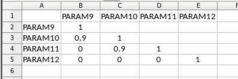
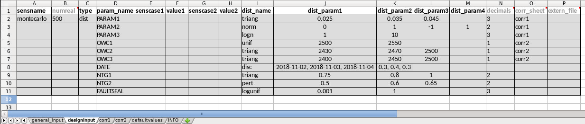
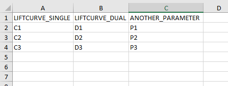
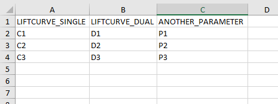

FMU design matrix
Usage
fmu-tools is designed to be used in several scenarios:
Part of an ERT workflow, typically as a pre- or postprocessing workflow used by HOOK_WORKFLOW PRE_SIMULATION (preprocessing) or POST_SIMULATION (postprocessing)
Part of other scripts or utilities, either for analysis or preparation for visualization such as webviz.
It can also be used interactively, e.g. in the (i)python interpreter or a Jupyter notebook.
The functionality is:
1. Automatic generation of design matrices to be run with DESIGN2PARAMS and
DESIGN_KW in ERT. You may generate a design matrix by running fmudesign:
fmudesign <design_input.xlsx> <output_matrix.xlsx>
where <design_input.xlsx> is the path to the input for generating the design matrix
and <output_matrix.xlsx> is the path to the output design matrix.
To see more verbose information (descriptive statistics, plots, etc), run with --verbose:
fmudesign <design_input.xlsx> <output_matrix.xlsx> --verbose
Use fmudesign --help to see all available options.
Study the examples for how to configure the input for the design matrix.
2. Post processing of onebyone sensitivities. This can be run from a python script using fmu.tools.sensitivities. Study the examples to learn how to use it.
Create design matrix for one by one sensitivities
These examples show use of the fmu.tools.sensitivities package to
generate design matrices automatically. Input is given as a dictionary
which can be generated from an excel workbook. The excel workbook must
be set up using a specific format. These examples explain how to set
up the workbook.
What types of sensitivities can be set up
The functionallity so far is covering set-ups for running single sensitivities (one by one sensitivities), but with some options for more advanced set-ups. The types of sensitivities that are covered are:
- seed
This is normally the reference sensitivity other sensitivities are compared to. All parameters will be at their default values taken from the defaultvalues sheet. Only the RMS_SEED will vary.
Some additional possibilities:
possible to have several sensitivities of type ‘seed’ in a set up, for instance looking at how RMS_SEED variation affects structure, how it affects facies or how it affects petrophysical modelling, see examples.
possible to set one or several parameters to another constant value than the default value by filling in parameter names, dist_name = const and dist_param1 = <value> in addition, see examples
- scenario
This is a sensitivity where parameter(s) are set to a constant values (high/low values). One or two scenario cases can exist for each sensitivity. Each of the two cases must be given a name.
- dist
A monte carlo sensitivity where parameters are sampled from specified distribution. The distribution name and distribution parameters are given as input. These distributions are implemented:
normal (mean, stddev) A normal (Gaussian) distribution.
normal (mean, stddev, min, max) A truncated Gaussian distribution.
uniform (min, max) A uniform distribution.
loguniform (min, max) A stochastic variable is log uniformly distributed if its natural logarithm is uniformly distributed. Arguments are the minimum and maximum of the output variable.
triangular (min, mode, max) A triangular distribution parametrized by minimum value, mode and maximum value.
pert (min, mode, max, scale=4) A PERT distribution, which is a re-parametrized Beta distribution. If a fourth parameter is given, it is the scale parameter (default is 4).
discrete ((value1, value2, …, value_n), (weight1, weight2, …, weight_n)) which is a discrete distribution with weights. If no weights are given, a discrete uniform distribution will be used (all weights are equal).
lognormal (mu, sigma) A stochastic variable is log normally distributed if the natural logarithm of the variable is normally distributed. If a variable X is normally distributed, then Y = exp(X) is log normally distributed. Note that the arguments are mu (mean) and sigma (standard deviation) of the logarithm of the variable.
const (value) Can be used to set a parameter to a constant value to override the default value. This can be used also for sensitivities of type seed.
The names are matched on case-insensitive prefixes
norm,unif,logunif,triang,pert,disc,lognandconst. For instance,norm,normal,normal, andNORMAL_DISTRIBUTIONwill all match to a normal distribution. Use the whole name for the distributions in the dist_name column, or alternatively the short version names above. Distribution parameters are filled in into the dist_param1, dist_param2 .. columns in the same order as above.- ref
This creates a single realisation with parameter values set to default values. Typically used if no seed variation or background distributions are used, but a realisation with default values is needed as a reference for tornado calculations. Note that this realisation will not itself be plotted as a sensitivity in the tornadoplot. This is flagged by SENSCASE set to ‘ref’ in the output design matrix.
- background
This creates a set of realisations with parameter values set to default values except a set of background parameters that are varying, but have the same set of values in all sensitivities. Typically used if no seed variation is included, but a sensitivity is needed as a reference for tornado calculations where only background parameters are varying, and all other parameters are at their default values. This sensitivity will be plotted as a sensitivity in the tornadoplot. This is flagged by SENSCASE set to ‘p10_p90’ in the output design matrix. The background parameters can either be generated from distributions or read from a xlsx file.
- extern
This type of sensitivity will read parameter values from an external file. Typically used when parameter values are created in another software. Specify in input which parameter names to read from the file.
Input configuration format
Currently supported is configuration in an excel workbook. The excel workbook contains several sheets. The three sheets general_input, designinput and defaultvalues need to exist in the input workbook (although variants like GeneralInput, generalinput, Generalinput etc. are also supported).
The general_input sheet contains the designtype, which has to be set to onebyone. The parameter repeats tells how many RMS seeds (RMS_SEED) that should be repeated for each sensitivity. This is also the default number of realisations per sensitivity/sensitivity case. When rms_seeds is set to default it means that RMS_SEED numbers 1000, 1001, 1002, … will be used. These RMS_SEED numbers are repeated for each sensitivity/sensitivity case.
background is used in more advanced cases where single sensitivities are run on top of a background distribution and is further explained in the examples. Otherwise set it to None. distribution_seed is optional and can be used to freeze the seed for montecarlo sampling from the distributions (for sensitivities of type dist). By adding a distribution_seed fmudesign will generate identical design matrices if run twice from the same input configuration.

In the designinput sheet, the parameters and values or distributions for each sensitivity are specified. See examples below.
The defaultvalues sheet contains default values for the design. For parameters that also exist in the designinput sheet, the defaultvalues are used as ‘base case value’ in the deisgn matrix. In addition all the parameters in the defaultvalues sheet will be written to the corresponding DefaultValues sheet in the output excel designmatrix workbook.

Optional additional sheets:
sheet(s) with correlation matrices for sensitivities where correlated random variables are used
sheet defining background parameters and correlation sheet(s) for these
Example1: Excel file for one by one sensitivities with repeating RMS seeds
In this first example the general_input and defaultvalues are as in the figures above. In the designinput sheet four sensitivities are specified in addition to the seed sensitivity: ‘faults’, ‘velmodel’, ‘contacts’ and ‘multz’. Each sensitivity can contain one or several rows with parameters, but the sensitivity type and senscase (names for the 1-2 cases per scenario) is defined in the first row of the sensitivity. In the faults sensitivity two alternative values for the parameter FAULT_POSITION are specified, in senscase ‘east’ and ‘west’. Typically these will in tornado calculations be compared to the rms_seed sensitivity where the FAULT_POSITION will be set to its default value (0). In the velmodel sensitivity only one alternative senscase is specified for the parameter DC_MODEL. In the contacts sensitivity three parameters are varied at the same time. In the shallow case, all contacts are set shallow, and opposite in the deep sensitiviy case.
The last sensitivity is a monte carlo sensitivity where the parameter MULTZ_ILE has values sampled from the distribution loguniform(0.0001, 1). Note that for this last sensitivity the numbers of realisations (numreal) is set to 20, which overrides the default number of realisations given in the general_input spreadsheet. The RMS_SEED numbers will for these 20 realisations be from 1000 to 1019, since rms_seeds was set to default in the general_input sheet.

To generate the design matrix from this input use the fmudesign script (see also Usage).
fmudesign <path_to_design_input_example1.xlsx> <path_to_output_design_matrix.xlsx>
Alternatively from a notebook:
from fmu.config import oyaml as yaml
from fmu.tools.sensitivities import DesignMatrix, excel2dict_design
input_dict = excel2dict_design('../input/config/design_input_example1.xlsx')
design = DesignMatrix()
design.generate(input_dict)
# Writing design matrix to excel file
design.to_xlsx('../input/distributions/design01.xlsx')
Example 2: Excel input for sensitivities with group of (correlated) parameters sampled from distributions
In this example the general_input and defaultvalues are the same as for Example 1 but the designinput is a bit different. For sensitivity sens6 there are several parameters sampled from different distributions. Note that for the normal distributions the truncated versions will be used if dist_param3 (min) and dist_param4 (max) are specified in addition to dist_param1 (mean) and dist_param2 (standard deviation).
For sensitivity sens7 corr1 is specified in the corr_sheet column. This means that the parameters for this sensitivity should be correlated, and the correlations should be read from the sheet with the same name. If there are several groups of correlated parameters within a sensitivity, there can be several correlations sheets with different names. Specify the name of the correlation sheet the parameter belongs to in the corr_sheet column.
Note also that the integer value in the decimals columns specifies how many decimals the parameter value should be rounded to before output in the design matrix. Only used for sensitivities of type dist. The numreal and decimals columns are optional.
Sensitivity sens8 is defined to be read from an external file by providing a file path in the extern_file column. This needs to point to an excel spreadsheet with parameter names as column headers, and no row index. The extern_file column is optional if no sensitivities of type ‘extern’ are used.

The corr1 sheet used for sens7 looks like this. Parameters of type ‘const’ or ‘discrete’ can not be correlated.:
Example 3: Testing different velocity models with uncertainty
This example shows a set-up for testing the effects of different velocity models run with structural uncertainty (Simulation mode) with HUM in RMS. In the general_input tab repeats is set to 10 and rms_seeds is set to ‘default’, so that for each sensitivity 10 realisations with RMS seeds 1000, 1001, –, 1009 are created.
The reference sensitivity rms_seed is set up with COHIBA_MODE ‘prediction’, and VEL_MODEL (velocity model) number 1 read from defaultvalues. So for this sensitivity the seed variation will only affect other jobs using RMS_SEED, such as facies/property modelling.
In the sensitivity velmod1 COHIBA_MODE is set to ‘simulation’ which will control the HUM job to be run in simulation mode. Velocity model is set to model number 1. This explores the how the RMS seed variation affects the structure for velocity model 1. Similarly the sensitivity velmod2 will explore how the RMS seed variation affects the structure for velocity model 2. Note that all these three first sensitivities are set up with type set to seed which flags that SENSCASE in the output design matrix should be set to p10_p90 so that P10/P90 is calculated for the tornado plot.
The last sensitivity vel_combined explores the full velocity uncertainty by combining velocity model 1 and 2 in simulation mode, by sampling model 1 or 2 with 60/40 % probability, both run in simulation. Here is defined that 30 realisations will be used for this sensitivity instead of the default number 10, from the general_input sheet.

Example 4: Excel input for sensitivities with background parameters
The use of background parameters is flagged in the general_input sheet by changing background from None to either a name of the sheet where the background parameters are specified, or a path to an excel file where the only/first sheet is specifying the background parameters. If the external file contains less samples than number of realisations for a sensitivity, the rest will be filled with default values. In this example it is specified that the background parameters should be generated from distributions as defined in the sheet (in the same workbook) called ‘background’. The specification is the same as for a sensitivity of type ‘dist’: distribution types, distribution parameters, and optionally decimals and correlation sheet. The background sheet for this example is shown in the figure below.


Example 5: Sensitivities with a single reference realisation
This type of set up might be used if one do not want to include any RMS seed variation or background parameters, but want to create a single realisation that can be used as reference for the tornado plot. In the general_input sheet rms_seeds is set to None. The first line in the designinput sheet is using senstype set to ‘ref’. This is flagging that it should take parameter values from the defaultvalues sheet, and that it will get SENSCASE set to ‘ref’ in the output design matrix. This ensures it can only be used as a reference for tornado calculations, but will not itself plot as a sensitivity in the tornado plot. The next three sensitivities in this example are scenario sensitivities with only one realisation (as there is no RMS seed variation), while the final one samples 10 values for MULTZ_ILE from a distribution.

Example 6: Sensitivities with a single reference realisation and seed sensitivity
It is also possible to set up a design matrix that includes both a single reference realisation and a seed sensitivity that can be used as reference for tornado plots. In this example the single reference realisation will get the RMS_SEED value as specified in defaultvalues, while the other sensitivities will get the number of realisations and RMS_SEED values as specified in general_input tab. This allows the user to later choose which reference (realisation 0 or the sensitivity called ‘rms_seed’) to use for the tornado plots.

Example 7: Sensitivities with background but without RMS seed
This set up might be used if running a one by one design on top of varying background parameters, but the seed sensitivity is not included. In this case there will be no ‘seed’ sensitivity to use as reference for tornado plot, so one need to generate a reference where only the background parameters are varying and the other parameters are set to their default values. This is flagged by using the sensitivity type ‘background’ which do not take any additional parameters. In the output design matrix this first sensitivity will have SENSNAME ‘background’ and SENSCASE ‘p10_p90’. The background sensitivity is by default included in the tornado plot.

Example 8: Full monte carlo sensitivity
This example shows a full monte carlo design with correlated parameters. This means all the parameters are randomly drawn from their distributions, and could have correlations as provided in the correlation sheet. In this example there are two groups of correlated parameters, and their correlation matrices are specified in the sheets corr1 and corr2. The remaining parameters are not correlated. In this case there is actually only one sensname as all the parameters belong to the same sensitivity. The number of realisations can either be provided in the general_input sheet, or in the numreal column in the designinput sheet. All parameters in the design must also be included in the defaultvalues sheet.
Example 9: Adding dependent discrete parameters to monte carlo designs
If parameter A is sampled from a discrete distribution, and one or more additional parameters is to be set based on the value of parameter A, this can be specified in a separate sheet, and sheetname added to the designinput sheet in an optional column called dependencies. In this example the parameter LIFTCURVE_SINGLE is drawn from a weighted discrete distribution, while LIFTCURVE_DUAL and ANOTHER PARAMETER is set based on the value of LIFTCURVE_SINGLE. Note that there cannot be more than one “mother” parameter, and you cannot have more complicated dependencies like if statements, formulas or inequalities. This solution is only provided for 100% correlated discrete parameters.
 

Example: summary of design matrix
Use summarize_design on a design matrix on standard fmu format for one-by-one sensitivities to summarize the realisation numbers for each SENSNAME and SENSTYPE, and whether they are scalar sensitivities or monte carlo sensitivities.
#!/usr/bin/env python
# -*- coding: utf-8 -*-
from fmu.tools.sensitivities import summarize_design
# Full or relative path to design matrix .xlsx or .csv format
designname = '../tests/data/sensitivities/distributions/design.xlsx'
# Only include for excel files; name of sheet that contains design matrix
designsheet = 'DesignSheet01'
designtable = summarize_design(designname, designsheet)
# designtable is a pandas DataFrame with summary of the design in the designmatrix,
# i.e. it will contain realisation number, senstype and senscase for each sensitivity
Example: calculating one tornadotable
Using calc_tornadoplot with a ‘designsummary’ and a resultfile as input, and calculating statistics to visualize in a tornado plot for a given choice of SELECTOR (e.g. ZONE:’Nansen’) and RESPONSE (e.g. STOIIP_OIL). The reference is usually the mean of the realizations in the “seed sensitivity”, but it can also be specified as a single realisation number, e.g. if you have a reference case in realization 0. Statistics showing the difference to the reference can be calculated as absolute values, or as percentages. You could also choose to exclude from the plot, sensitivities that are smaller than the seed sensitivity P10/P90.
#!/usr/bin/env python
# -*- coding: utf-8 -*-
import pandas as pd
from fmu.tools.sensitivities import calc_tornadoplot
designtable=pd.read_csv('designsummary.csv')
results = pd.read_csv('resultfile.csv')
response = 'STOIIP_OIL'
selectors = ['ZONE', 'REGION'] # One or several in a list
# One or several in a list of lists
selection = [['Nansen','Larsson'], ['SegmentA']] # Will sum Nansen and Larsson volumes first
reference = 'seed' # Alternatively a single realisation number
scale = 'percentage' # Alterntively 'absolute'
(tornadotable, ref_value) = calc_tornadoinput(
designtable, results, response, selectors,
selection, reference, scale)
# Other options: specify cutbyseed = True and sortsens = False (see documentation).
# tornadotable is a pandas DataFrame for visualisation of tornadoplots in other tools.
# ref_value is the average of the reference,